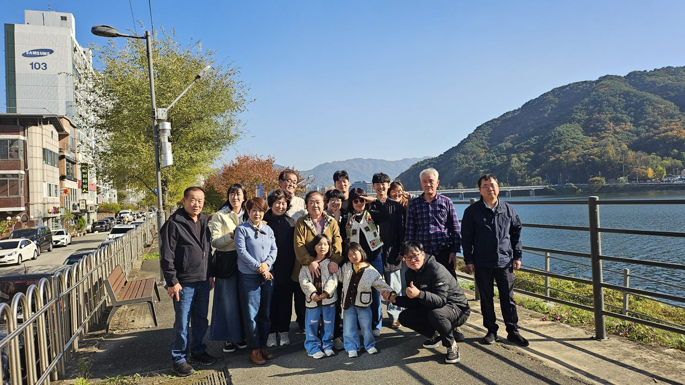
2026년 10월 31일
사진을 누르면 그날 하루 4분 영상
장면별로 보기누르면 그 자리에서 재생

모이는 날
오랜만에 식구들이 한자리에
2분 24초예배 방에 식구들이 하나둘 들어섰다. 먼저 온 얼굴을 찾아 반갑게 인사하고, 오랜만에 보는 아이들을 두고 누가 누구인지 맞혀 보며 웃음꽃이 피었다.
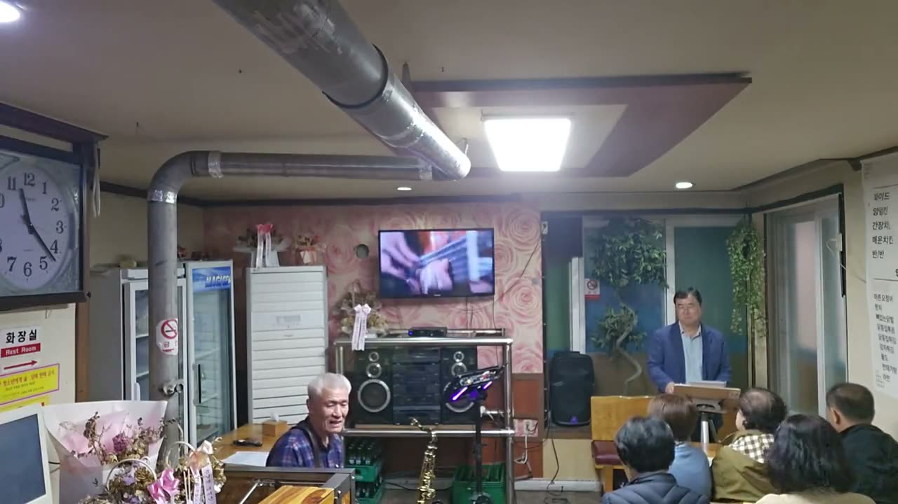
찬송 180장
다 같이 찬송으로 예배를 열었다
2분꽃무늬 벽지 앞 텔레비전 화면에 찬송가가 떴다. 종이 한 장씩 손에 든 식구들이 다 같이 노래로 예배를 열었다.
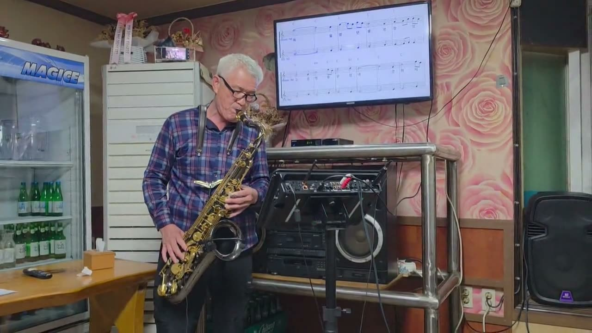
색소폰 특송
나 같은 죄인 살리신
43초일곱 남매 가운데 한 사람이 강대상 옆에서 색소폰을 들었다. 화면에 띄운 악보를 보며 부는 가락에 식구들이 노래를 얹었다.
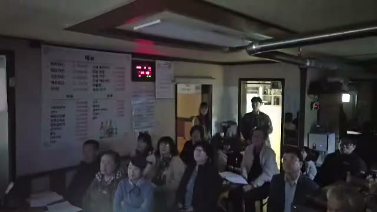
말씀
"여러분이 그렇게 좋아하는 예수님과 열두 제자들 다 유대인입니다."
2분불을 낮춘 방에서 긴 말씀이 이어졌다. 아브라함은 왜 우리의 조상인가, 성경은 누구에게 주어진 책인가 하는 물음에서 시작했다.
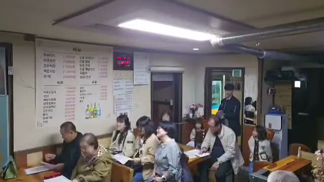
가족 소식과 축복
"오랜만에 정말 이렇게 조카들 자녀들 같이 … 너무 반갑고 감사합니다."
2분지난 8월 모임과 9월의 전도 소식을 나누고, 다음 예배를 12월 19일로 알렸다. 마지막은 오랜만에 함께한 조카들과 자녀들에게 건넨 인사였다.
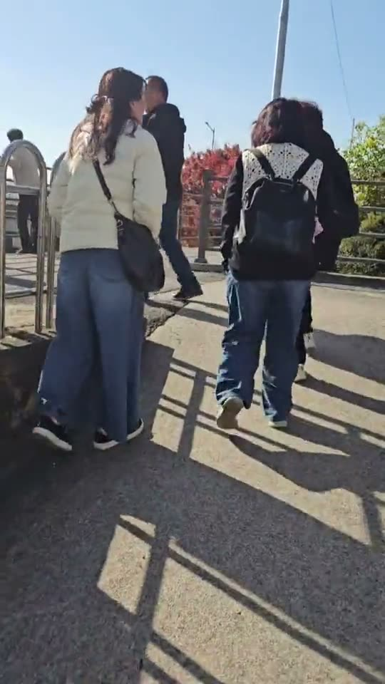
소양강
점심을 먹고 강가를 걸었다
1분 28초강가 닭갈비집에서 점심을 먹고, 그냥 헤어지기 아쉬워 소양강 강변을 걸었다. 볕 좋은 날, 난간 앞에 모두 서서 사진을 찍었다.
예배 다시 보기순서를 누르면 그 부분부터
10월의 마지막 토요일, 일곱 남매와 식구들이 춘천에 모였다. 찬송으로 예배를 열고, 색소폰에 맞춰 다 같이 노래하고, 말씀을 듣고, 지난 석 달의 소식을 나눴다.
축복 기도에는 오지 못한 식구들도 담겼다.
예배가 끝난 뒤에는 소양강 강가 닭갈비집에서 점심을 먹고, 그냥 헤어지기 아쉬워 강변을 걸으며 사진을 찍었다.
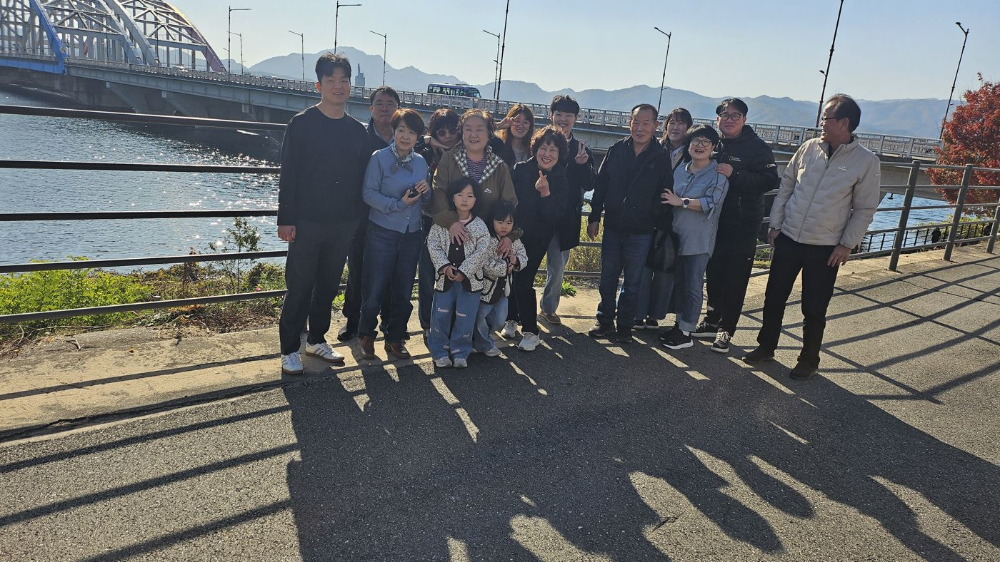
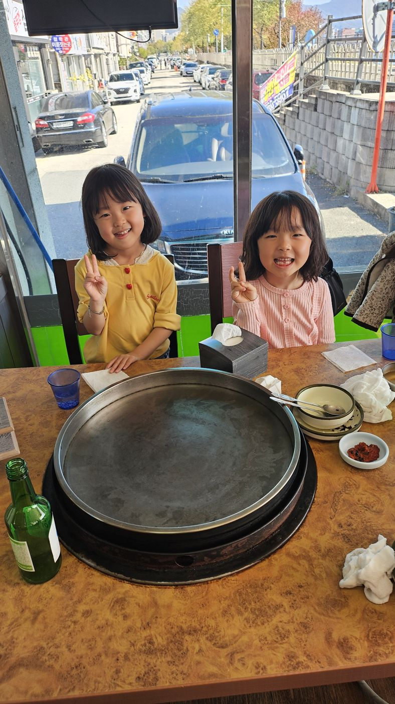
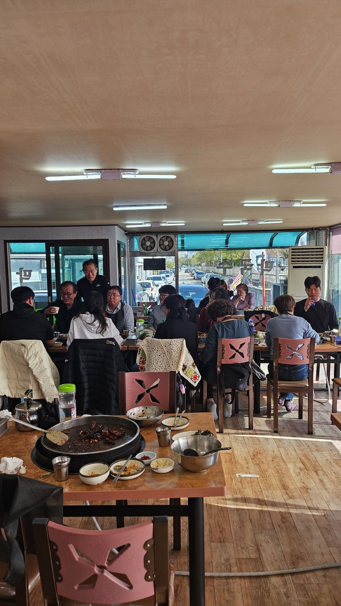
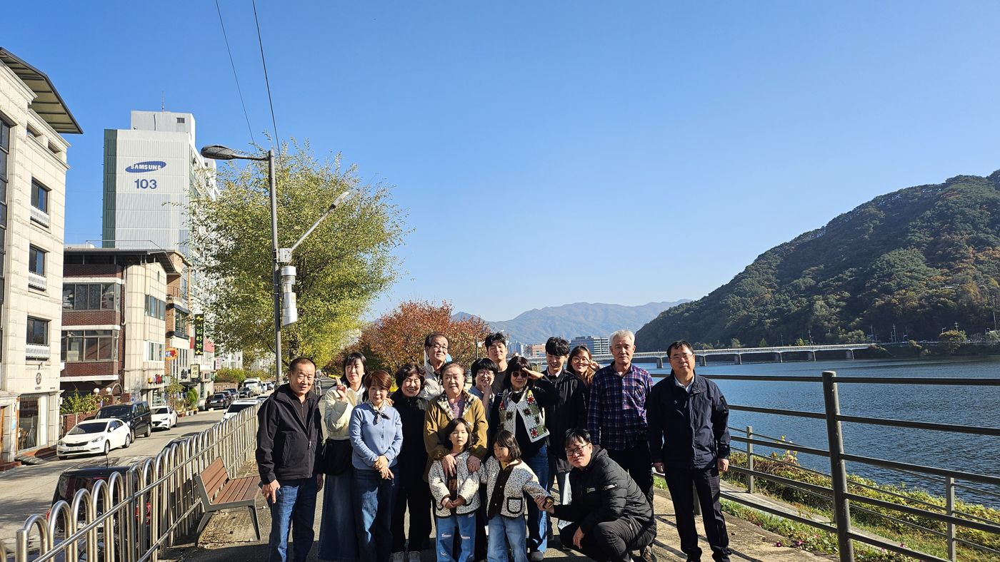
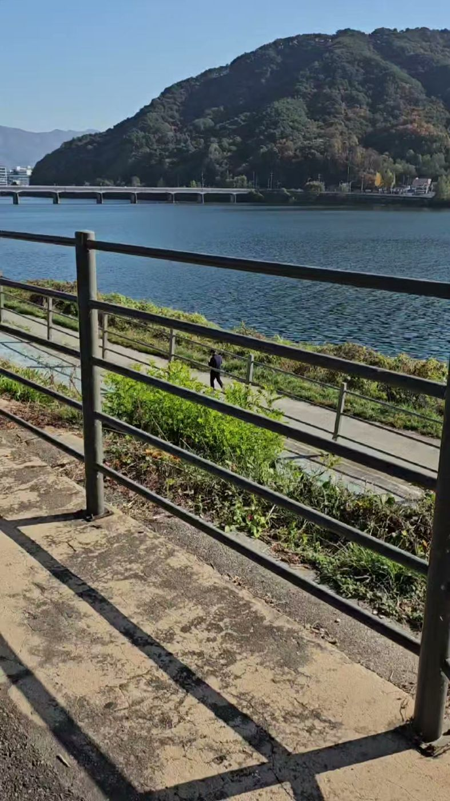